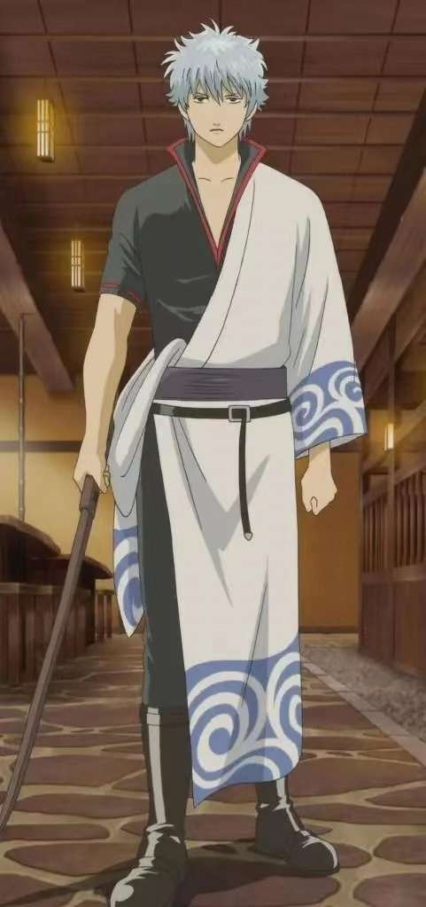
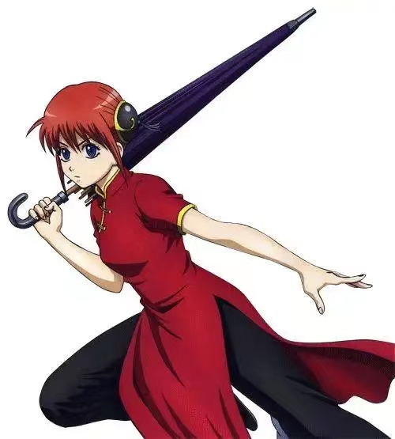
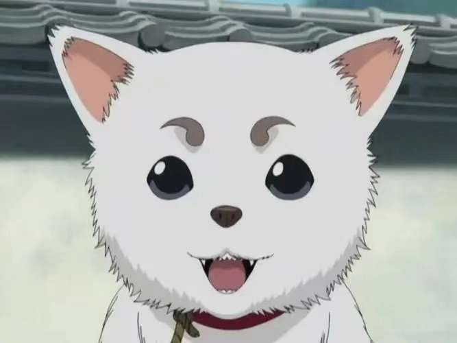
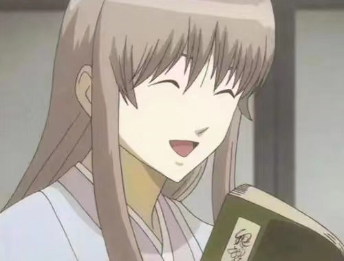
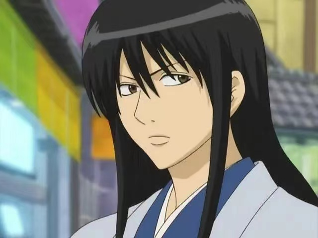
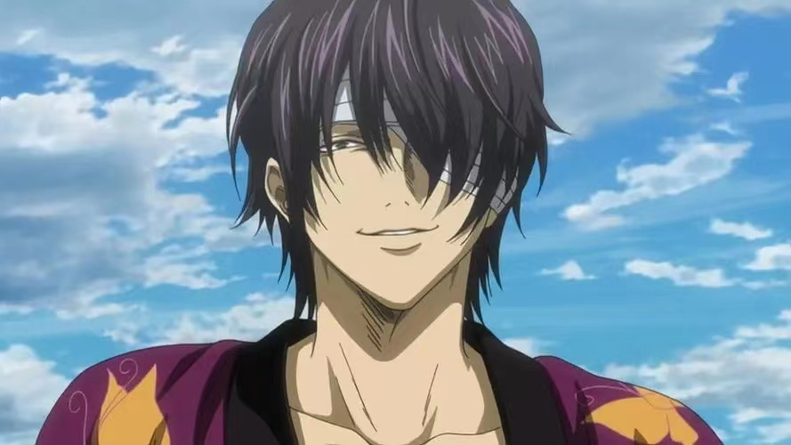
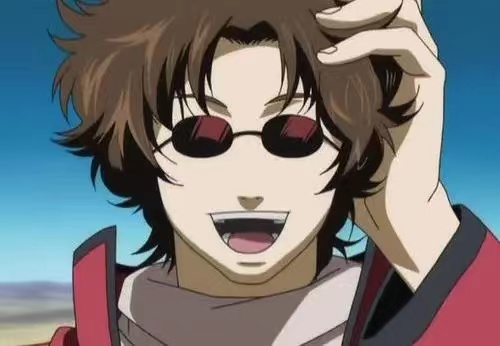

坂田银时，日本动漫《银魂》中的主人公。前攘夷志士，现为万事屋老板。喜食甜食平时懒散无拘束，但遭遇事情时所展现出来的气度与实力却无人不被他所撼动。
| 姓名 | 简介 |
志村新八 |
坂田银时的同事，“万事屋”里不可缺少的吐槽成员，是“万事屋”里攻击力最差的一位。还担任江户人气偶像寺门通的亲卫队队长。很爱他的姐姐阿妙，即使被说成姐控，也想要姐姐能幸福。 |
|  神乐 |
坂田银时的同事，宇宙最强的战斗种族“夜兔族”的一员。 为了打工赚钱而来到江户，但是被流氓利用雇佣，在厌倦了打斗逃出黑社会组织的时候遇到了银时与新八，之后留了在万事屋打工。 |
|  定春 |
宠物角色，巨型生物，由美女巫女阿音和百音因无力饲养而放到万事屋门口，是主人公神乐收养的宇宙巨大生物，居住在万事屋。每当银时说要扔掉它时，就会狠狠地给他一口，把他咬得头破血流。 |
|  吉田松阳 |
坂田银时的老师，收养了银时，对银时的影响非常大。真实身份为是天照院历代首领虚，实力十分恐怖。 |
|  桂小太郎 |
坂田银时曾经的同学，攘夷战争的幸存者之一，与坂田银时、高杉晋助同为吉田松阳门下学生，战后各人分道扬镳，因其曾往“天人”的政府机关里扔炸弹而被看作是恐怖分子。作为攘夷志士的头目之一，他逐渐从原本的激进派转变为稳健派。 |
|  高杉晋助 |
坂田银时曾经的同学，经常与银时比剑。在天人入侵时一同踏上了战场并结识了坂本辰马。战败后左眼遭胧持刀刺中致使失明。此后高杉重新组建了鬼兵队，成为激进派攘夷分子，发誓要摧毁这个腐朽的世界，被称为“攘夷浪士中最过激、最危险的男人”。 |
|  坂本辰马 |
坂田银时曾经的同学，攘夷后期离开战场，成立快援队。希望能通过贸易，给天人与地球人带来利益，谋求双方和平共处。 |